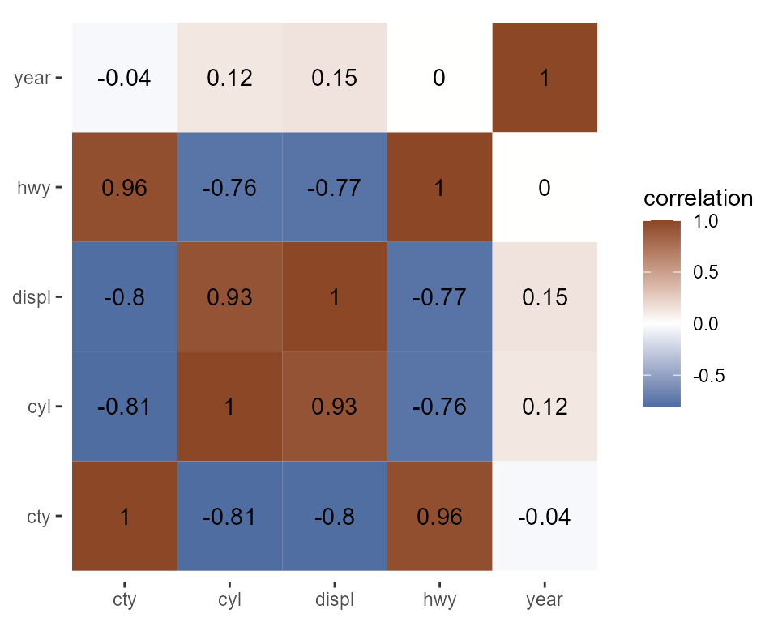
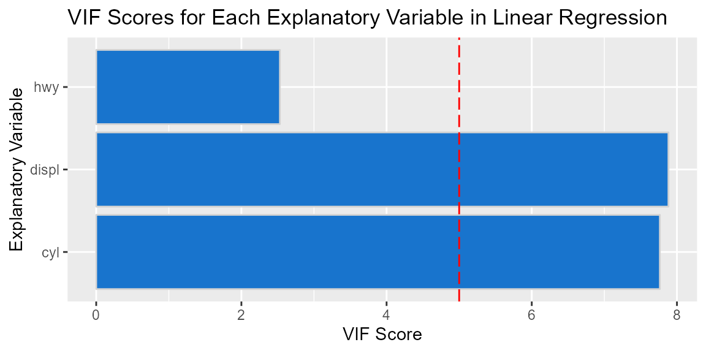

collinearityR-vignette
collinearityR-vignette.RmdIdentify multicollinearity issues by correlation, VIF, and visualizations. The collinearityR package is designed for beginners of R who want to identify multicollinearity issues by applying a simple function. It automates the process of building a proper correlation matrix, creating correlation heat map and identifying pairwise highly correlated variables.
This document introduces you to collinearityR’s basic set of tools and demonstrates how to apply them to data frames.
Data: mpg
We will use the data set mpg from the ggplot2 package to explore the multicollinearity tools of collinearityR. This dataset contains 234 observations and 11 variables.
data <- ggplot2::mpg
dim(data)
#> [1] 234 11
data
#> # A tibble: 234 x 11
#> manufacturer model displ year cyl trans drv cty hwy fl class
#> <chr> <chr> <dbl> <int> <int> <chr> <chr> <int> <int> <chr> <chr>
#> 1 audi a4 1.8 1999 4 auto~ f 18 29 p comp~
#> 2 audi a4 1.8 1999 4 manu~ f 21 29 p comp~
#> 3 audi a4 2 2008 4 manu~ f 20 31 p comp~
#> 4 audi a4 2 2008 4 auto~ f 21 30 p comp~
#> 5 audi a4 2.8 1999 6 auto~ f 16 26 p comp~
#> 6 audi a4 2.8 1999 6 manu~ f 18 26 p comp~
#> 7 audi a4 3.1 2008 6 auto~ f 18 27 p comp~
#> 8 audi a4 quattro 1.8 1999 4 manu~ 4 18 26 p comp~
#> 9 audi a4 quattro 1.8 1999 4 auto~ 4 16 25 p comp~
#> 10 audi a4 quattro 2 2008 4 manu~ 4 20 28 p comp~
#> # ... with 224 more rowsCorrelation Matrix and its Longer Form
corr_matrix() allows you to calculate the Pearson correlation coefficients for all numeric variables. Moreover, you can round the outcome to the desired decimals. The output is a generic correlation matrix and its longer form, so you can decide which form you can use to directly plot a heatmap without further data manipulation.
For example, we can calculate the correlation matrix and its longer form using all the numerical columns in mpg.
library(collinearityR)
corr_matrix(data, decimals = 2)[1]
#> [[1]]
#> # A tibble: 25 x 4
#> variable1 variable2 correlation rounded_corr
#> <chr> <chr> <dbl> <dbl>
#> 1 displ displ 1 1
#> 2 displ year 0.148 0.15
#> 3 displ cyl 0.930 0.93
#> 4 displ cty -0.799 -0.8
#> 5 displ hwy -0.766 -0.77
#> 6 year displ 0.148 0.15
#> 7 year year 1 1
#> 8 year cyl 0.122 0.12
#> 9 year cty -0.0372 -0.04
#> 10 year hwy 0.00216 0
#> # ... with 15 more rows
corr_matrix(data, decimals = 2)[2]
#> [[1]]
#> displ year cyl cty hwy
#> displ 1.0000000 0.147842816 0.9302271 -0.79852397 -0.766020021
#> year 0.1478428 1.000000000 0.1222453 -0.03723229 0.002157643
#> cyl 0.9302271 0.122245347 1.0000000 -0.80577141 -0.761912354
#> cty -0.7985240 -0.037232291 -0.8057714 1.00000000 0.955915914
#> hwy -0.7660200 0.002157643 -0.7619124 0.95591591 1.000000000Correlation Heatmap
corr_heatmap() allows you to visualize the correlations by making a heatmap. This function plots data as a color-encoded Pearson correlation matrix using the longer form output returned from corr_matrix(). You can individually specify the colors for negative and positive correlations.
For example, we can plot a heatmap of all the numerical columns in mpg.
corr_heatmap(data)
Data Frame and Bar Chart of Variance Inflation Factors (VIF)
vif_bar_plot() allows you to perform linear regression, calculate the VIF scores and plot the VIF scores using a single function. The output is a list containing a tibble that includes VIF scores and a bar chart for the VIF scores alongside the specified threshold for each explanatory variable in a linear regression model. The visualization of the VIF scores alongside an adjustable thershold helps with the quick identification of the multicollinear variables.
For example we can calculate and visualize the VIF scores in a linear regression using some of the columns in mpg.
vif_bar_plot(c("displ", "cyl", "hwy"), "year", data, 5)[[1]]
#> # A tibble: 3 x 2
#> vif_score explanatory_var
#> <dbl> <chr>
#> 1 7.88 displ
#> 2 7.76 cyl
#> 3 2.53 hwy
vif_bar_plot(c("displ", "cyl", "hwy"), "year", data, 5)[[2]]
Multicollinearity Identification based on Pearson Coefficient and VIF Scores
col_identify() allows you to eliminate explanatory variables in a linear regression model by incorporating both Pearson’s coefficient and VIF scores. The output is a data frame containing Pearson’s coefficient, VIF scores and explanatory variables suggested for elimination. If no multicollinearity is detected, the output is an empty data frame. The function employs corr_matrix() and vif_bar_plot() in the process.
For Example, we can incorporate both Pearson’s coefficient and VIF scores in a linear regression model using some of the columns in mpg.
col_identify(data, c("displ", "cyl", "hwy", "cty"), "year",
corr_min = -0.8, corr_max = 0.8,
vif_limit = 5)
#> Joining, by = "variable1"
#> # A tibble: 3 x 5
#> # Groups: pair [3]
#> variable correlation rounded_corr pair vif_score
#> <chr> <dbl> <dbl> <list> <dbl>
#> 1 cty 0.956 0.96 <chr [2]> 13.9
#> 2 cty -0.806 -0.81 <chr [2]> 13.9
#> 3 cyl 0.930 0.93 <chr [2]> 8.17